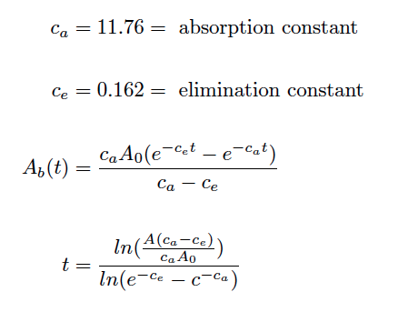

About
You need to be up for another 6 hours to get all your homework done. How can you optimize your performance? Staggering your caffeine and regulating the amount of caffeine you drink will ensure that your feel alert for as long as necessary.
We examined three different factors.
- 1) The half life of caffeine. This is a simple exponential decay equation, with the half life constant based upon the weight of the person in question. From our research, we found that the constant can vary dramatically. The constant is doubled if someone is taking contraceptives, or halved if they are a smoker.
- The amount of caffeine actually in someone's system. We used constant rates of absorption and elimination, based upon the models Therrien presents. The constant of elimination is smaller by two orders of magnitude. Therefore, the caffeine will be quickly absorbed into the body, its effects are felt for a very long time. This is the reason for the long, gradual tail after the sharp peak soon after the caffeine is ingested. With our tool, we repeatedly spike the caffeine intake to keep the caffeine levels in the blood from trailing below a certain threshold.
- The natural need to rest. Humans sleep schedules are governed by circadian rhythms that can be modeled with trigonometric equations. The main driver in circadian rhythms is endogenic; it stems from internal impulses. However, the rhythm can be shifted through exogenous factors as well. By combining the physiological and external (such as day-night shifts) factors, we get an overall representation of inclination to sleep, periodic over 24 hours.
Combining the chemical, biologic, and impulsive factors, we can model at what point someone will need to take another dose of caffeine to remain in a target range, based upon their body weight.
Created by Shelvacu, Abhishek Joshi, Thomas Nguyen, Naomi Musgrave and Matthew Lee at CodeDay Seattle (Nov 8 - Nov 9).
WORKS CITED
http://coffeetea.about.com/od/caffeinehealth/a/How-Much-Caffeine-Is-In-Coffee-Tea-Cola-And-Other-Drinks.htm
- caffeine amounts in various drinks
http://www.caffeineinformer.com/the-caffeine-database
- more comprehensive caffeine levels list
http://www.accessdata.fda.gov/scripts/fcn/fcnDetailNavigation.cfm?rpt=scogsListing&id=42
- reccommended caffeine dosed based upon body weight
https://www.math.hmc.edu/~depillis/MATH164/MATH164_StudentProjects_2003/LCROWL/CoffeeReport.doc
- starting point for determining necessary equations (later did not use at all, due to reliability issues with equations)
Therrien, Nicole. "Caffeine: The Drug and Your Body."
http://home2.fvcc.edu/~dhicketh/DiffEqns/spring07projects/NicoleTherrien/Caffeine%20paper.htm
- equation for caffeine amount in blood after certain amount of time
Ingre, Michael. "Validating and Extending the Three Process Model of Alertness in Airline Operations."
http://www.plosone.org/article/info%3Adoi%2F10.1371%2Fjournal.pone.0108679
- models for endogenous and exogenous circadian rhythm